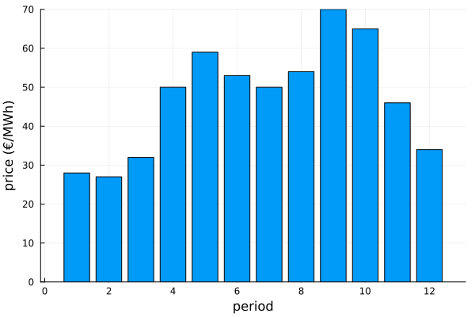
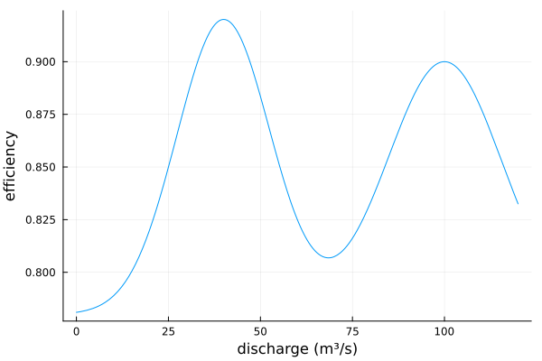
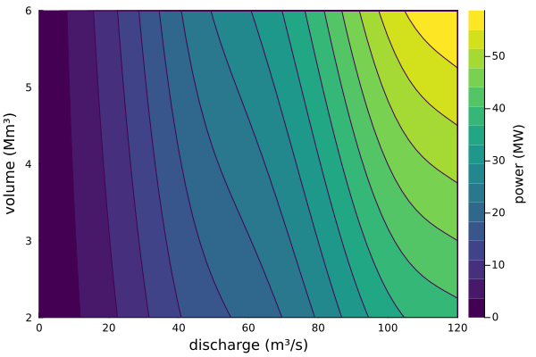
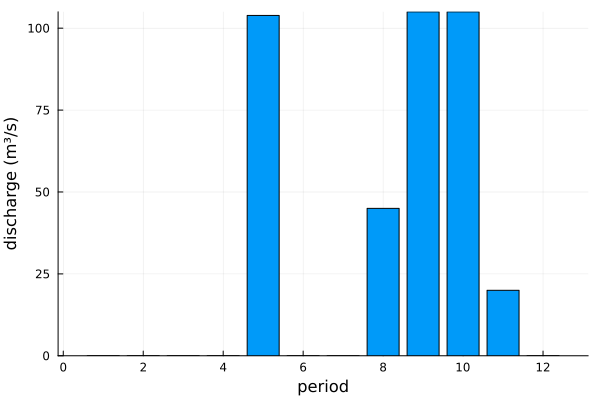
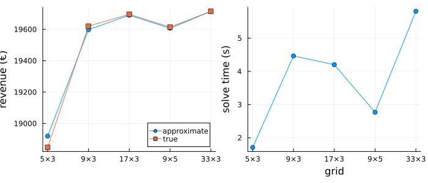
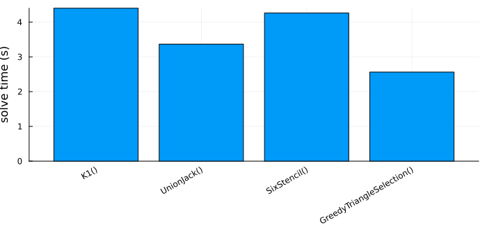

Hydropower scheduling
This tutorial schedules a hydropower plant over a day. The power produced depends on two variables, the discharge through the turbines and the volume of the reservoir, through a smooth but nonconvex production function, and the turbines can only run above a minimum discharge, which needs on/off decisions. The problem is a mixed-integer nonlinear program, which solvers such as Juniper or SCIP can take on directly. Here we instead approximate the production function on a grid and solve the resulting mixed-integer program with HiGHS, which proves its solution optimal for the approximation and needs no starting point. The tutorial shows
- how a function of two variables is approximated on a grid,
- how the
Hypographdirection suits a quantity that is maximized, - how the grid size trades accuracy against solve time, and
- how the formulation affects the solve time.
The problem
The plant has one reservoir and two turbines, a small and a large one, that share a penstock. Over a day of twelve two-hour periods, it discharges water to produce power that is sold at the price of the period. The reservoir receives a constant inflow, and must end the day with at least a given volume.
using JuMPusing HiGHSusing PiecewiseLinearOptusing PlotsT = 12price = [28, 27, 32, 50, 59, 53, 50, 54, 70, 65, 46, 34] # €/MWhinflow = fill(20.0, T) # m³/sv_min, v_max = 2.0, 6.0 # Mm³, the bounds of the reservoir volumev_start, v_end = 4.0, 3.0 # Mm³, the initial volume and the minimum final oneq_min, q_max = 20.0, 120.0 # m³/s, the discharge when the plant runsperiod = 2 * 3600 / 1e6 # Mm³ per period of a discharge of 1 m³/sbar(1:T, price; xlabel = "period", ylabel = "price (€/MWh)", label = "")
The power is proportional to the discharge q, the head h and the efficiency η. The head grows with the volume v of the reservoir. The efficiency has two peaks, at the design discharge of the small turbine and at that of both turbines together, with a dip in between where the water is split unfavorably:
head(v) = 40 + 5 * (v - v_min) # mfunction efficiency(q) return 0.78 + 0.14 * exp(-((q - 40) / 18)^2) + 0.12 * exp(-((q - 100) / 22)^2)endproduction(q, v) = 9.81 * efficiency(q) * q * head(v) / 1000 # MWplot( efficiency, 0, q_max; xlabel = "discharge (m³/s)", ylabel = "efficiency", label = "",)
As a function of (q, v), the production is nonconvex, and the two peaks of the efficiency give two ridges:
contourf( range(0, q_max; length = 61), range(v_min, v_max; length = 41), production; xlabel = "discharge (m³/s)", ylabel = "volume (Mm³)", colorbar_title = "power (MW)", color = :viridis,)
The model has the water balance, the final volume, and the on/off variables u that force the discharge to be zero or between its bounds:
function hydro_model() model = Model(HiGHS.Optimizer) set_silent(model) @variable(model, v_min <= v[0:T] <= v_max) @variable(model, 0 <= q[1:T] <= q_max) @variable(model, spill[1:T] >= 0) @variable(model, u[1:T], Bin) fix(v[0], v_start; force = true) @constraint(model, v[T] >= v_end) @constraint( model, [t in 1:T], v[t] == v[t-1] + period * (inflow[t] - q[t] - spill[t]) ) @constraint(model, [t in 1:T], q_min * u[t] <= q[t]) @constraint(model, [t in 1:T], q[t] <= q_max * u[t]) return model, v, q, uendhydro_model (generic function with 1 method)The revenue of a schedule with the true production function, in €:
revenue(q, v) = 2 * sum(price[t] * production(q[t], v[t]) for t in 1:T)revenue (generic function with 1 method)The piecewise linear approximation
The production function is approximated on a grid of discharges and volumes, with a triangle in each cell of the grid. PiecewiseLinear takes the function and the breakpoints along each axis. The production is maximized, so its approximation only needs to bound the output from above, which the Hypograph direction expresses. HiGHS is asked for a solution within 0.1% of the optimum of the approximation.
function solve_pwl(n_q, n_v; method = K1(), triangulation = K1Triangulation()) model, v, q, u = hydro_model() set_attribute(model, "mip_rel_gap", 1e-3) approximation = PiecewiseLinear( production, range(0, q_max; length = n_q), range(v_min, v_max; length = n_v); method = method, triangulation = triangulation, direction = Hypograph(), ) p = [approximation(q[t], v[t]) for t in 1:T] @objective(model, Max, 2 * sum(price[t] * p[t] for t in 1:T)) optimize!(model) @assert termination_status(model) == OPTIMAL q_pwl = value.(q) v_pwl = [value(v[t]) for t in 1:T] return ( approximate = objective_value(model), revenue = revenue(q_pwl, v_pwl), time = solve_time(model), q = q_pwl, v = v_pwl, )endpwl = solve_pwl(9, 3)(approximate = pwl.approximate, revenue = pwl.revenue, time = pwl.time)(approximate = 19597.58758629006, revenue = 19620.10462954053, time = 4.453871250152588)The approximate revenue is the optimal value of the approximated problem, and revenue is what the schedule earns with the true production function. The difference is the approximation error on this coarse grid. The schedule saves the water for the periods with the highest prices and runs both turbines there:
bar(1:T, pwl.q; label = "", xlabel = "period", ylabel = "discharge (m³/s)")
Refining the grid
A finer grid reduces the approximation error at the cost of a larger model. The error is visible as the difference between the approximate and the true revenue of the schedule, and as the change in revenue from one grid to the next.
grids = [(5, 3), (9, 3), (17, 3), (9, 5), (33, 3)]refinement = [solve_pwl(n_q, n_v) for (n_q, n_v) in grids]labels = ["$(n_q)×$(n_v)" for (n_q, n_v) in grids]revenues = plot( labels, [r.approximate for r in refinement]; marker = :circle, label = "approximate", ylabel = "revenue (€)", legend = :bottomright,)plot!( revenues, labels, [r.revenue for r in refinement]; marker = :square, label = "true",)times = plot( labels, [r.time for r in refinement]; marker = :circle, label = "", xlabel = "grid", ylabel = "solve time (s)",)plot( revenues, times; layout = (1, 2), size = (700, 300), bottom_margin = 5Plots.mm,)
The volume axis matters little here, as the head changes by a few percent over the day, so the discharge axis is where breakpoints pay off. A schedule from a coarse grid can also serve as the starting point of a nonlinear solver, which then adjusts the discharges to the true production function.
Comparing formulations
The grid methods select a cell with an SOS2 constraint along each axis and then a triangle in the cell. They differ in how many binary variables the triangle selection needs, and the axis method can be any univariate formulation, e.g. K1(ZigZagBinary()). The default for the default K1Triangulation is K1, with two binary variables for the triangle. All methods give the same optimum within the tolerance; the solve times differ.
methods = [ "K1()" => (K1(), K1Triangulation()), "UnionJack()" => (UnionJack(), UnionJackTriangulation()), "SixStencil()" => (SixStencil(), K1Triangulation()), "GreedyTriangleSelection()" => (GreedyTriangleSelection(), BestFitTriangulation()),]timings = map(methods) do (_, (method, triangulation)) return solve_pwl(9, 3; method = method, triangulation = triangulation).timeendbar( first.(methods), timings; xrotation = 30, ylabel = "solve time (s)", label = "", bottom_margin = 15Plots.mm, size = (700, 350),)
Solvers with native support for SOS2 constraints, such as Gurobi or Xpress, can also use K1(NativeSOS2()), which leaves the branching along the axes to the solver.
Summary
- A function of two variables is approximated on a grid with a triangle in each cell, and added to a model like a univariate function.
- The resulting MIP is solved to proven optimality without a starting point.
- The grid size trades accuracy against solve time, and the error of the approximation can be measured by evaluating the true function at the solution.
- The formulation matters for solve time; the defaults are a sound choice, and the alternatives are one keyword away.